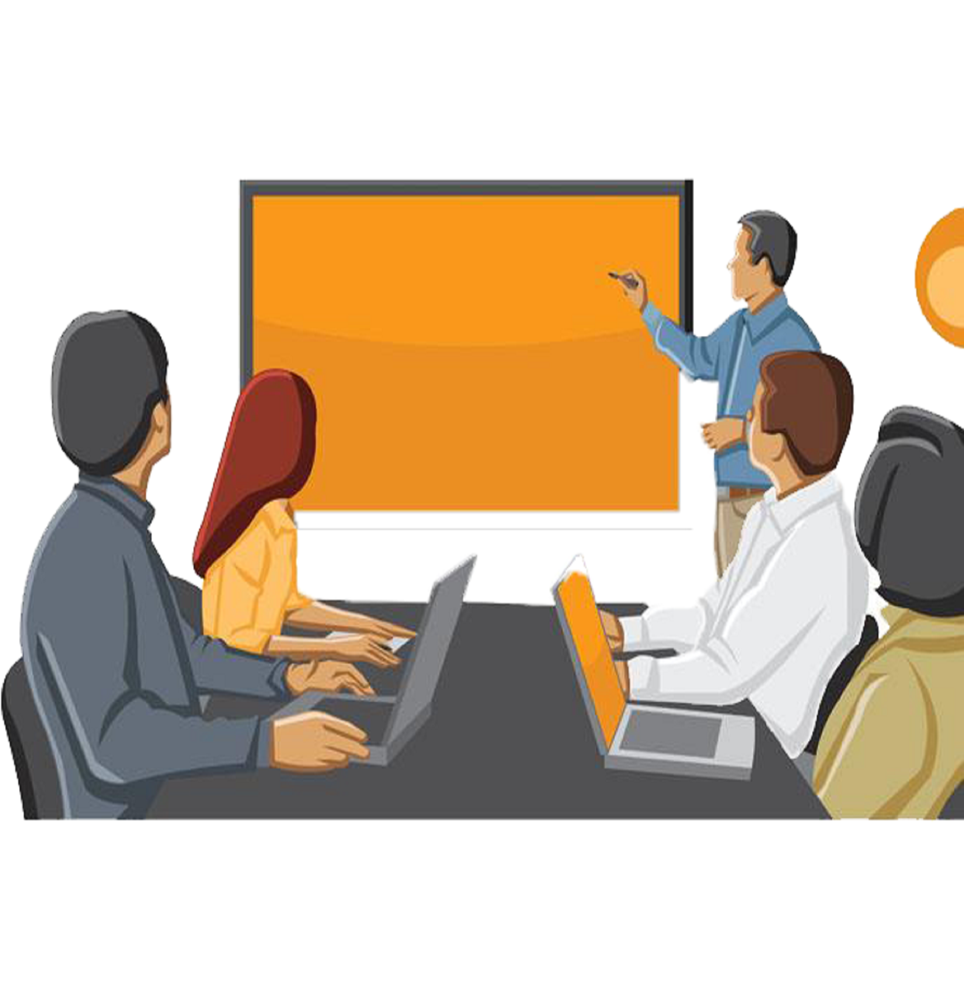
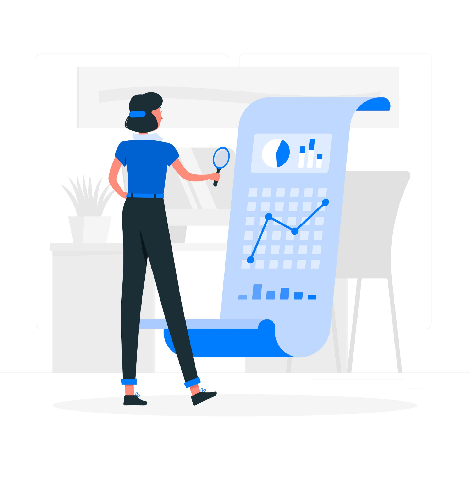
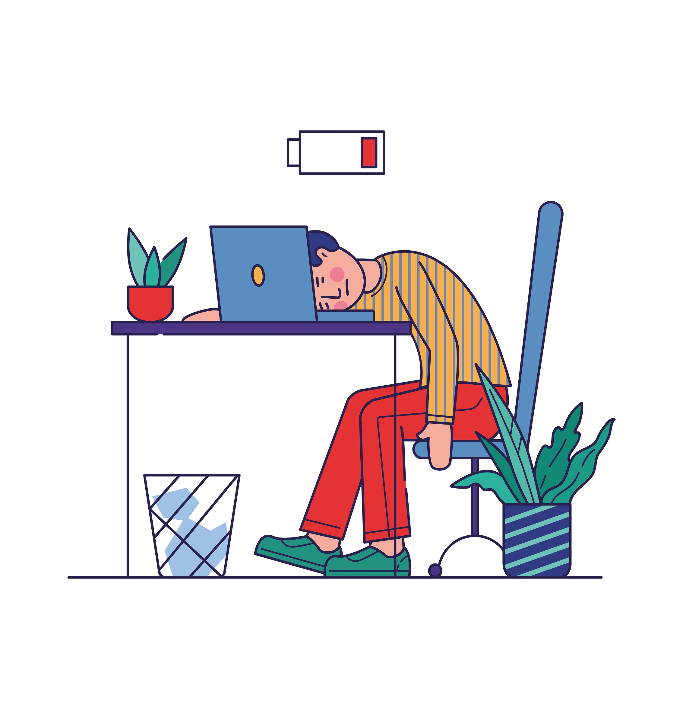
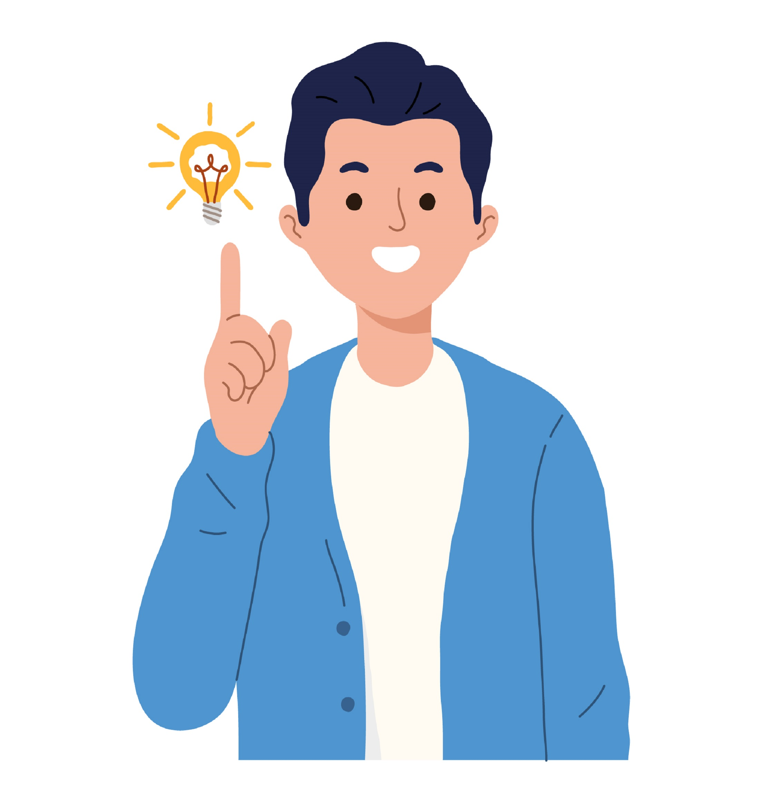

5th Staff Development Program
August 2020 - February 2021
1. Introduction to the Programme
By Prof. Colin N Peiris
2. Classroom Management
By Prof. Udith Jayasinghe-Mudalige
3. Personal Development
By Dr. B.M.K. Perera
4. Orientations as a Teacher in Higher Education
By Dr. Chalinda K. Beneragama
5. Teaching and Learning Methods - IV
By Dr. Malitha Wijesundara
6. Curriculum Development
By Prof. Ranjith Pallegama
7. Teaching and Learning Methods - I
By Prof. Udith Jayasinghe-Mudalige
8. Teaching and Learning Methods - II
By Dr. Chalinda K. Beneragama
9. Teaching and Learning Methods - III
By Dr. Chalinda K. Beneragama

10. Teaching and Learning Methods - V
By Prof. Udith Jayasinghe-Mudalige
11. Assessment and Evaluation
By Dr. Chalinda K. Beneragama
12. Personal Development - II
By Dr. Jayalath Edirisinghe
13. Research in The Life of An Academic
By Prof. Udith Jayasinghe Mudalige
14. Professional Grooming
By Ms. Lumini Budara
15. “Scientific” PowerPoint Presentation
By Dr. Chalinda K. Beneragama
16. Writing Research Publication & Ethics in Research
By Prof. Upali Samarasinghe
17. Development of Research Career and Profile
By Prof. Nimal Rajapaksha
18. Making a Portfolio
By Prof. Sriyani Peiris
19. Teaching Practice
By Prof. Colin N Peiris

20. Assessment and Evaluation
By Dr. Chalinda K. Beneragama
21. Stress Management
By Dr. B.M.K. Perera

22. Personal Development III
By Dr. B.M.K. Perera
23. Building Leadership Qualities
By Prof. Nagendrakumar

24. Assessing Students Online - Do's and Don'ts
By Dr. Chalinda K. Beneragama
25. Experience in handling student counselling
By Dr. Pabasari Ginige
26. Planning and Delivering A Lesson by Participants
Presented by Ms. Thilini Jayalath